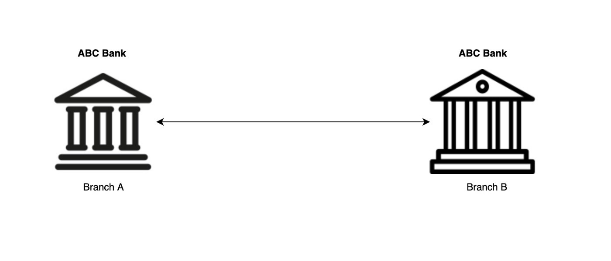
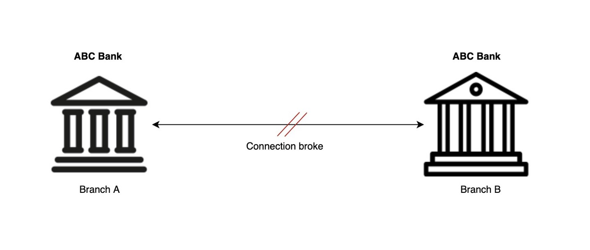
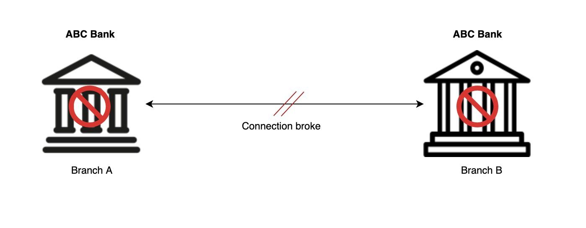
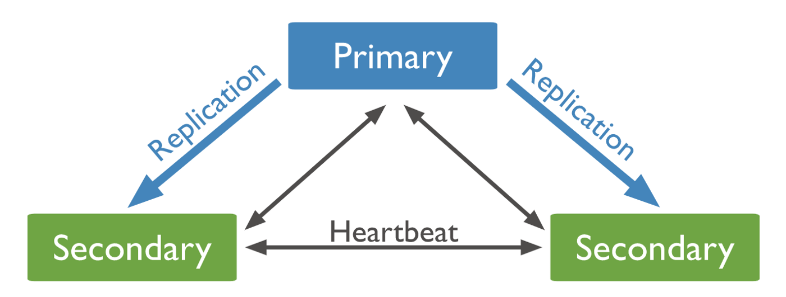
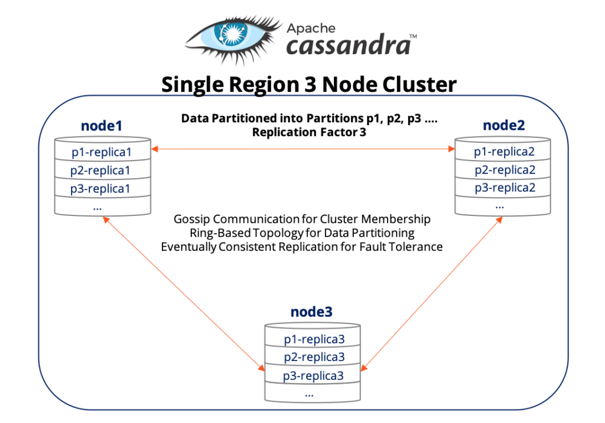

CAP Theorem and Distributed Systems
The CAP theoremstates that it is impossible for a distributed data store to simultaneously provide more than two out of the three characteristics: Consistency, Availability, and Partition tolerance. It is also called Brewer’s theorem named after computer scientist Eric Brewer.
If this definition is not clear for you let’s take an example. Assume there is a bank called ABC bank and it has two branches. There are 3 basic operations that customers can do in this bank are, Deposit money, Withdraw money and Check balance
Both these branches are storing the data in their local databases and they are working in sync ie, whenever a deposit or withdrawal happens in any of the two branches it will inform the other branch about this transaction so that both of them will have a consistent view of the data(both the branches will have same data about transactions and balance) and this happens real-time. Everything was working well and the customers are happy since they are able to do the banking transactions very smoothly.
But suddenly the connection between two branches broke(partition between the systems) and they are not able to share the customer transaction details with each other and it's a real business problem.
What are the possible scenarios here,
- A customer deposited an x amount of money in branch A, then somehow he reached branch B and tried to check the balance. But the customer is not able to view the new balance after the last deposit since the network connection between both the branches are broken. This is a really bad customer experience.s
- Another customer withdraws the whole money from branch A. If he goes to branch B he can again withdraw money from there since the last withdrawal from branch A is not updated in branch B. That means the customer can withdraw money even though he has zero balance, and this is the last thing the bank authorities want. This might even challenge the existence of ABC bank.
Both of the above problems are really important and possible in the real world. What we can do to avoid the above scenarios🤔,
- Both the branches can stop its operations and put a board in front of the bank like “Sorry we temporarily closed” until the connection between both the branches are up and running again. This is what we called Consistent design. We are making the data consistent in both the branches by sacrificing availability. But this will make the customers irritating since they are not able to withdraw the money they have in their account. In fact, cash withdrawal is the basic functionality of a bank, if they are not able to do that how will the customers be happy. 
- Or the bank can allow customers to withdraw money. Even though the branches can’t communicate with each other now, they can hold these transactions and update them with each other when the connection between them is up and running. This is what we called Available design, ie, the system is available even though there is a partition between them at the cost of consistency. But in this case, the risk of balance becoming negative is there if a customer withdraws cash from both the branches.
Consistency:
A distributed system is said to be consistent if all the nodes will have the same data at any point in time, ie, if we perform a read operation on a consistent system all the nodes will return the value of the most recent write operation.
In the case of ABC bank, the first solution of making the bank un-available if there, when there is a network partition, is an example of consistent design. Since the bank is blocking any further transaction until the connection between branch A and B are back, both the branches will have the same data about the customers and the balance enquiry from both the branches will give the same result.
Availability:
In an available system, all the non-failed nodes will return a success response irrespective of whether the operation is read or write.
In the case of ABC bank, the second solution of making the bank available for customers and syncing the data between the branches once the network connection between branches is up and running is an example of available design. Here the bank is always available for the customers even though there is inconsistency in the data.
Partition tolerance:
Partition means a break in communication between different nodes in a distributed system, ie, if a node is not able to receive any message from another node then we can say there is a partition between the nodes. In the case of ABC bank, there is a partition between branch A and branch B when the connection between those branches broke.
Partition tolerance means that the system should be able to work even if there is a partition in the system. If any node in the system fails then one of the replicas will take the responsibility and do the required action.
Let's come back to the CAP theorem, as said before according to the CAP theorem a distributed system can only provide 2 of the above 3 properties. But we can’t really avoid partition in the distributed system since we can’t give a 100% guaranty that the network connections won't fail, since there are practical or real-world limitations. So we have to choose between Consistency and Availability.
CAP theorem states that a distributed datastore has to make a tradeoff between consistency and availability when partition occurs
The distributed systems are categorized into CP and AP based on whether we choose consistency or availability.
CP (Consistency and Partition Tolerance) — MongoDB
In this type of system, we will choose consistency over availability, MongoDB is a good example of that.
MongoDB is a NoSQL database that stores data in one or more primary nodes in the form of BSON(Binary JSON). These primary nodes will have multiple replica sets that will get updated asynchronously. These replica sets will send a heartbeat to other nodes to check if other nodes(primary and replica sets) are active or not. If no heartbeat is received in some time then that node will be marked as inactive. If the primary nodes become unavailable then one of the secondary nodes needs to be elected as primary. Till a new primary node is elected from the replica sets the whole system will remain unavailable, ie, it chooses consistency over availability.
AP (Availability and Partition Tolerance) — Cassandra
AP systems will choose availability over consistency, Apache Cassandra is a good example.
Cassandra is a peer-to-peer system, ie masterless architecture with multiple points of failure. It also maintains multiple replicas of data in separate nodes. If partition occurs in the systems then the replicas won't get updated with new data. But here even though the data is inconsistent the replicas will still be available to the users. Cassandra provides eventual consistency that means all the replicas will get updated data eventually but for some time interval, there will have inconsistent data in case of partition. ie, this type of system will choose availability over consistency.
Summary
According to the CAP theorem, we can’t have Consistency, Availability, and Partition tolerance in distributed databases, we need to choose any two of the three. But in distributed databases, we can’t avoid partition because of real-world constraints so it has to choose always. Hence we have to choose one from consistency and availability. Choosing from these two properties will depends on the system we are going to build and the requirement. If we want to build a banking system where data consistency is very important we have to choose consistency over availability, but if we are building a social media application like Facebook or Twitter where data availability is more important than consistency we can do the reverse.